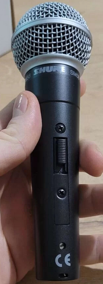
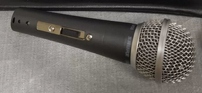

Здесь собраны основные признаки, по которым можно отличить подделку в линейке микрофонов SHURE 58 от оригинала. Микрофоны SHURE 58 активно подделываются много лет, поэтому оригинал найти очень сложно. А в последнее время появились даже продавцы, которые не завлекают покупателя ценой, а продают подделки по цене оригинала.
Наличие XLR шнура
В комплекте к SHURE 58 шнур никогда не прилагается. Есть шнур - значит подделка.
Технологические отверстия
Вот фотография оригинального микрофона SHURE SM58:

Видно, что внизу есть два отверстия: под винт и под XLR-защелку.
У подделок может быть три отверстия (и отсутсвует надпись CE):

Отличия в дизайне
Внешний вид микрофона SHURE 58 - разработан профессиональными дизайнерами и фиксирован. Недопустимо, чтобы накладка выключателя была не в цвет самого микрофона. Если накладка блестящая - это подделка.
Нанесение шрифтов
Надпись по кругу, рядом с головой микрофона, сделана так, что расстояние между словами SHURE и SM58 одинаковое по всему кругу. Если где-то расстояние сбивается, например так:
SHURE SM58 SHURE
или так
SHURE SM58 SHURE
То это подделка.
Лишние наклейки